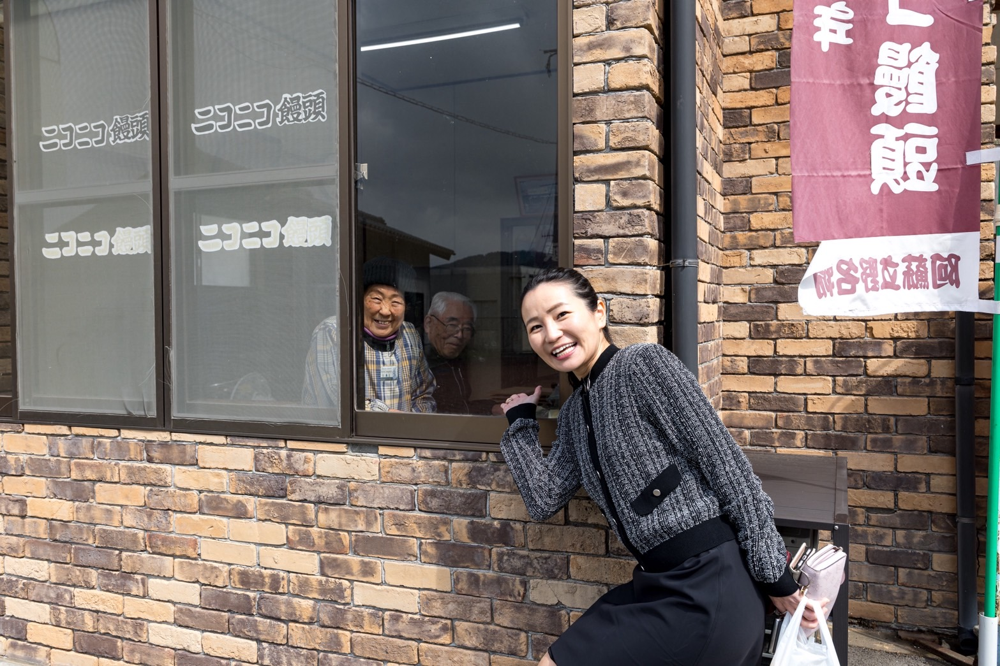
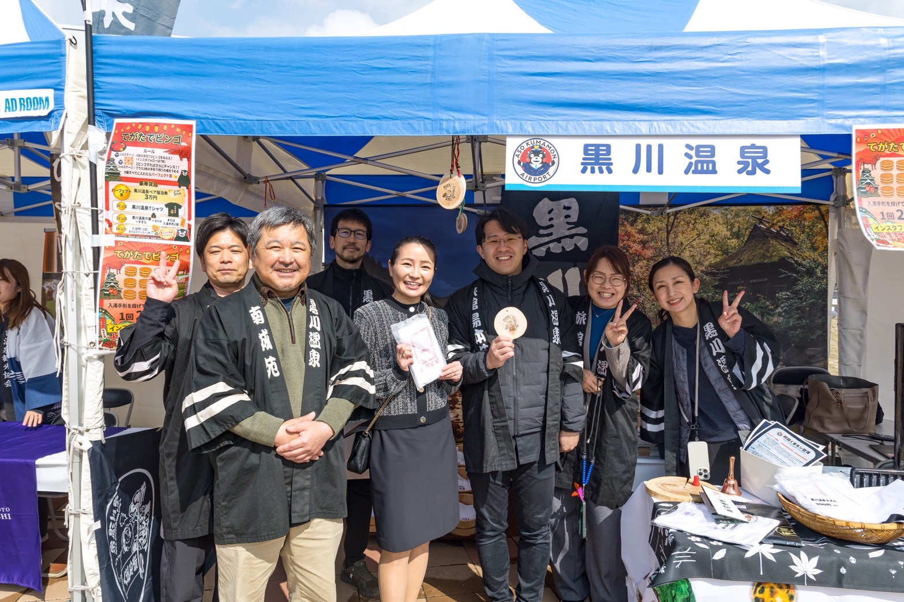
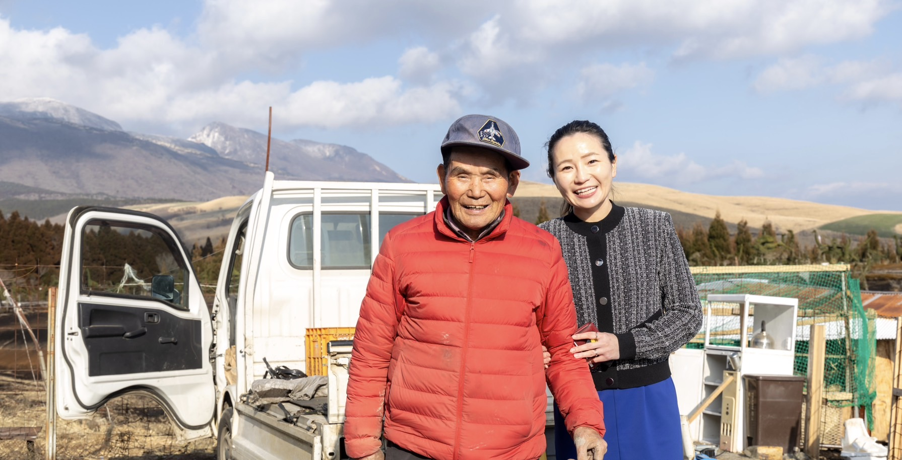
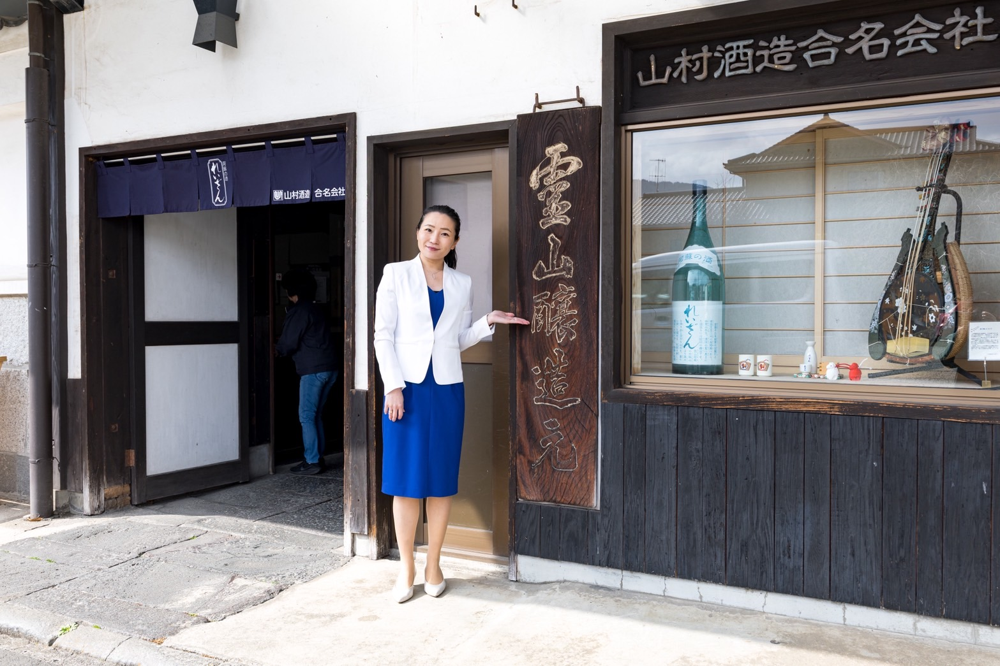
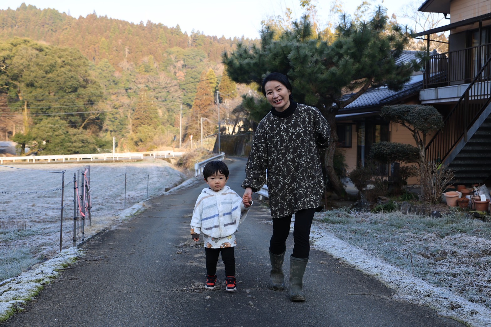

故郷への恩返し、熊本の未来のために。
TANAKA MIE
熊本県議会議員候補（阿蘇郡区）
Profile
たなか みえ / Mie Tanaka
| 生年月日 | 平成2（1990）年5月2日生まれ |
|---|---|
| 出身地 | 熊本県阿蘇郡南小国町 |
| 学歴 |
上智大学 文学部 新聞学科 卒業 上智大学院 文学研究科 新聞学専攻 修士課程修了 |
| 職歴 |
エンターテイメント会社勤務 平成29年〜 参議院議員 有村治子 秘書 （高市早苗総理・総裁のもと自由民主党 総務会長） |
| 資格 | 令和5年 政策担当秘書資格取得 |
Vision
01
幼い頃に父が寝たきりとなり、母とも死別。日本の医療・福祉・社会保障制度に支えられたからこそ、この制度を守り、さらに充実させたい。
02
子育て中の母親だからこそわかる、医療・教育・福祉の現場の声。安心して子どもを産み育てられる熊本をつくる。
03
参議院議員秘書として培った政策立案力と実務経験を、故郷・阿蘇の発展のために活かす。
Gallery




